Quelques-uns de nos nombreux projets
Des activités d’artivisme, de nettoyage de la nature, une journée volley-ball, l’organisation de la fête de l’indépendance ukrainienne, un séminaire en Norvège… autant de projets qui font vivre notre ASBL. N’hésitez pas à nous suivre sur Instagram et Facebook pour suivre toutes nos actualités. En voici quelques-uns présentés en détail :
Avril – septembre 2026 : Cine Club 2.0 – Explorer la société à travers le cinéma
Cine Club 2.0 est un projet d’éducation au cinéma qui associe esprit critique, découverte des métiers et pratique créative. À travers des projections et des débats sur des enjeux de société tels que la justice restaurative, les droits reproductifs et d’autres défis contemporains, les participants sont invités à réfléchir, à échanger et à mieux comprendre le monde qui les entoure. Le programme propose également une découverte du secteur audiovisuel grâce à des rencontres avec des professionnels du cinéma, notamment un réalisateur, ainsi qu’à une visite du studio Dreamwall. Pour clôturer cette expérience, les participants prennent part à un atelier collectif d’une semaine consacré à la réalisation d’un film, au cours duquel ils collaborent à l’écriture, au tournage et au montage de leur propre court-métrage. En réunissant des personnes d’horizons divers, Cine Club 2.0 encourage la créativité, le travail d’équipe, l’éducation aux médias et la citoyenneté active grâce au pouvoir du cinéma.
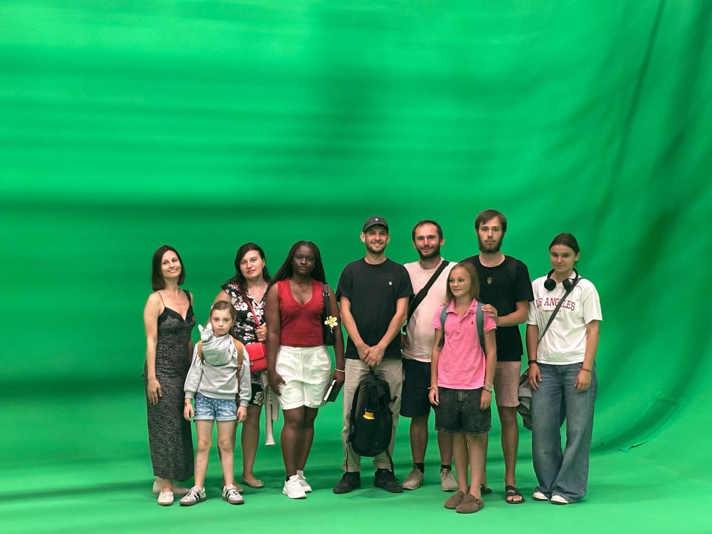
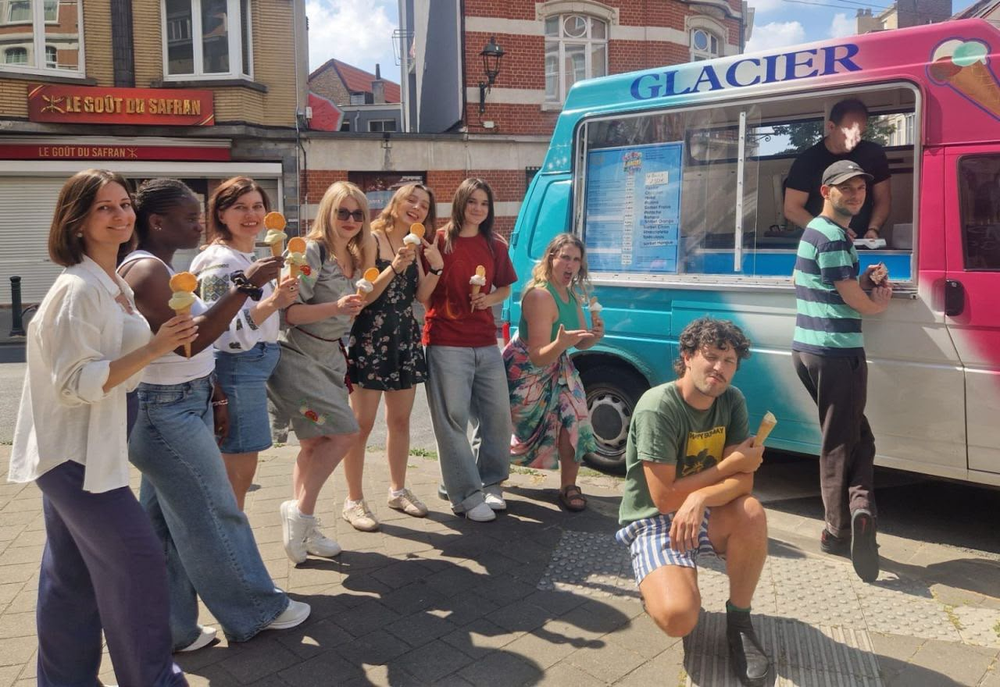
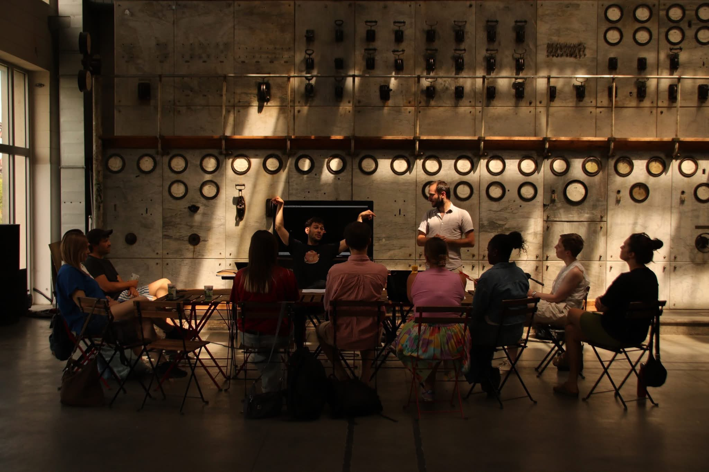
Juillet 2026 – United Youth for Change, Belgium Paddle, défi de nettoyage et travail d’équipe
Quel est le point commun entre ces activités ? Elles permettent toutes aux jeunes de découvrir que le changement commence par la participation. Dans le cadre de notre échange de jeunes Erasmus+ United Youth for Change, des participants venus de Belgique et de Roumanie ont pris part à des actions environnementales, des défis collaboratifs et des ateliers interactifs visant à renforcer l’engagement citoyen, l’esprit critique et la coopération. L’apprentissage ne se fait pas uniquement en classe. Il se produit parfois en nettoyant un espace naturel, en relevant des défis ensemble ou en sortant de sa zone de confort. Merci à tous les participants pour leur énergie et leur engagement en faveur d’un impact positif, une petite action à la fois.
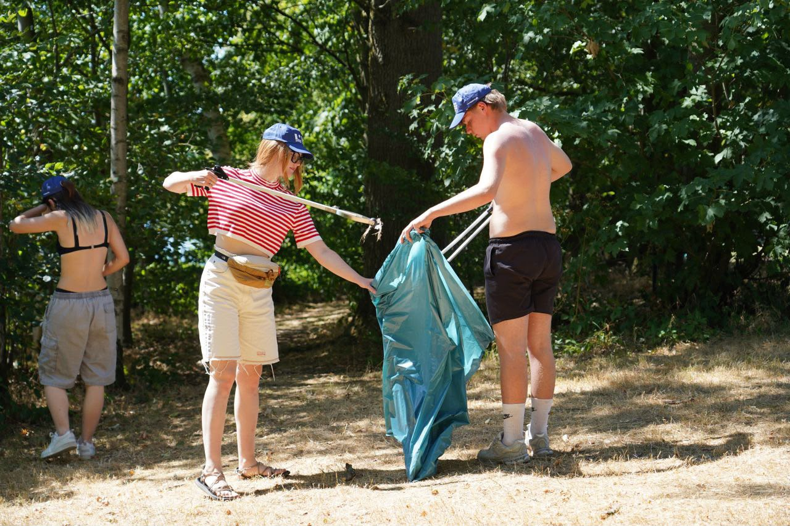
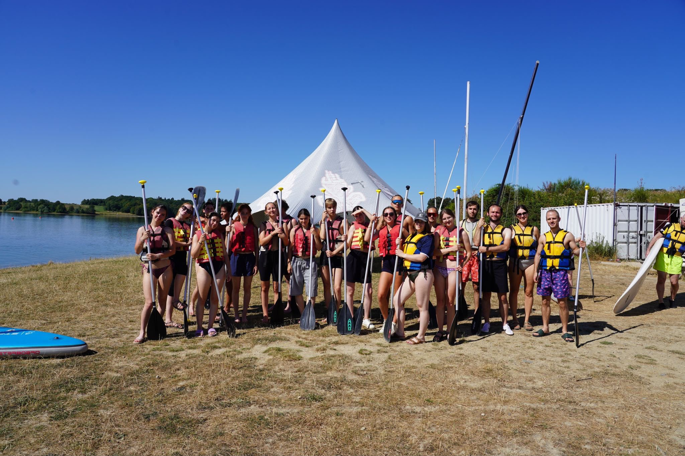
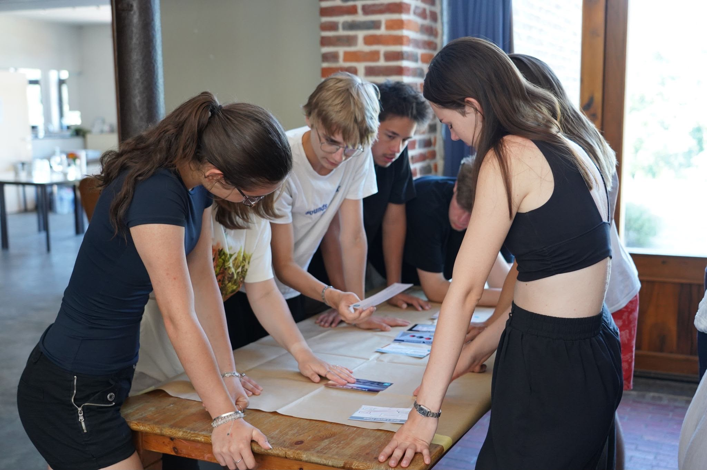
Août 2026 – Visite d’étude au Québec, Canada : la culture comme moteur du changement social
Grâce à une bourse de mobilité du Bureau International Jeunesse (BIJ), des membres de Lingua Fortuna ont passé une semaine au Québec à la rencontre d’artistes, d’organisations culturelles et d’initiatives communautaires à Montréal, Magog et Sherbrooke. À travers des échanges avec l’artiste visuel Alain Paiement, le Centre social d’aide aux immigrants (CSAI), la communauté ukrainienne de Montréal, les services culturels de Magog, Ô Cirque, le Théâtre des Petites Lanternes et le collectif des arts de la scène Axile, les participants ont exploré le rôle de la culture dans l’inclusion sociale, la préservation du patrimoine, la participation citoyenne et l’engagement des jeunes. Ces rencontres inspirantes ont renforcé une conviction commune : la culture n’est pas un luxe, mais un puissant outil de dialogue, d’inclusion et de transformation sociale. Cette visite a également fait naître de nouvelles idées de collaborations entre la Belgique et le Canada, notamment autour d’un échange de jeunes transatlantique.
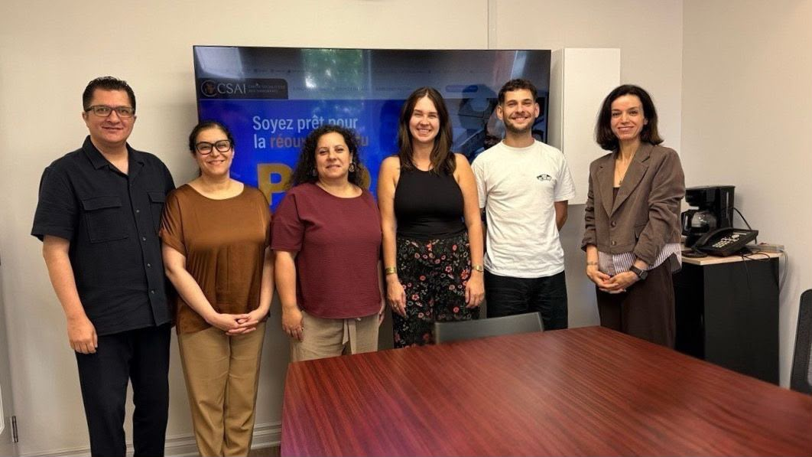
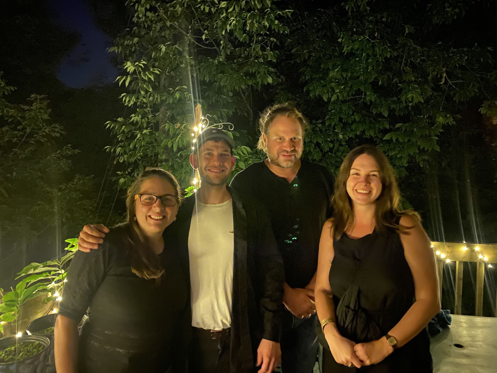
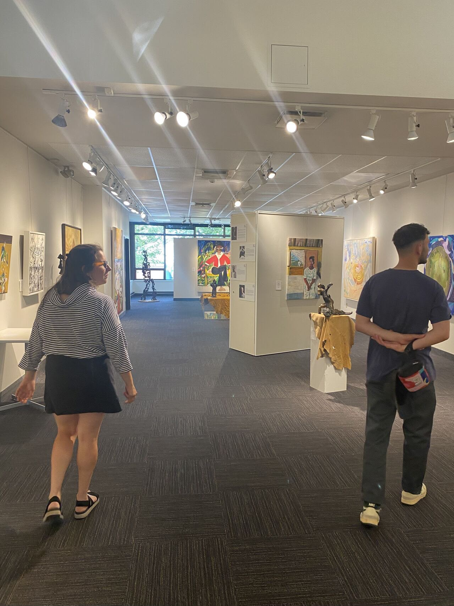
Mai 2026 - Digital Minds of the Future, Hongrie
Le projet a réuni 26 jeunes travailleurs de Bulgarie, d’Espagne, de France, de Grèce, de Hongrie, d’Italie, de Pologne, du Portugal, de Roumanie, de Serbie et de Turquie à Mezőberény, en Hongrie, pour huit jours d’apprentissage intensif et de coopération internationale. L’objectif de ce projet était de renforcer les compétences numériques des jeunes travailleurs et d’explorer comment des outils numériques innovants peuvent améliorer la qualité du travail auprès des jeunes. Grâce à l’éducation non formelle, à l’apprentissage par l’expérience, au travail d’équipe et aux échanges interculturels, les participants ont acquis des compétences pratiques dans les domaines de la création de contenus numériques, de l’intelligence artificielle, de l’apprentissage mixte, de la collaboration virtuelle, de la narration numérique et de l’animation en ligne.
- Au cours de cette formation, les participants ont examiné comment la technologie peut être utilisée non seulement comme une ressource technique, mais aussi comme un outil pédagogique pertinent qui favorise la participation des jeunes, l'inclusion, la créativité et la citoyenneté active.
- En associant des ateliers pratiques, des défis collaboratifs et des moments de réflexion, nous avons créé un environnement d'apprentissage dynamique dans lequel les participants ont pu tester de nouvelles méthodologies et réfléchir immédiatement à la manière de les transposer dans leur pratique quotidienne du travail auprès des jeunes.
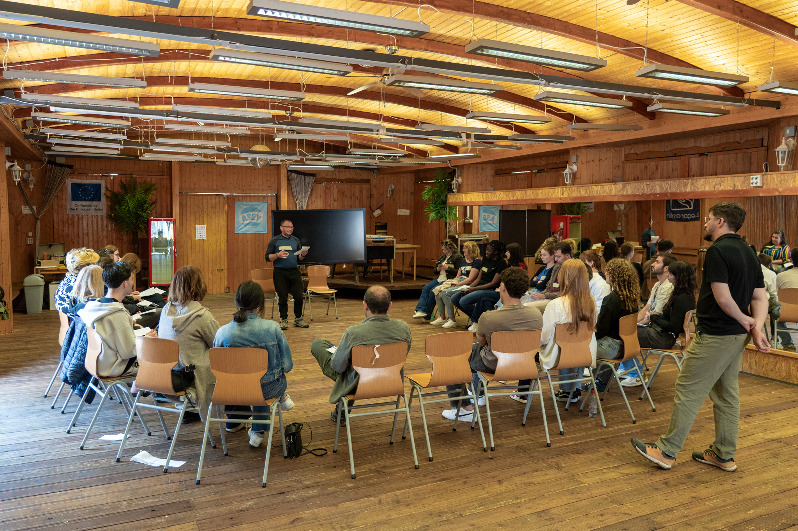
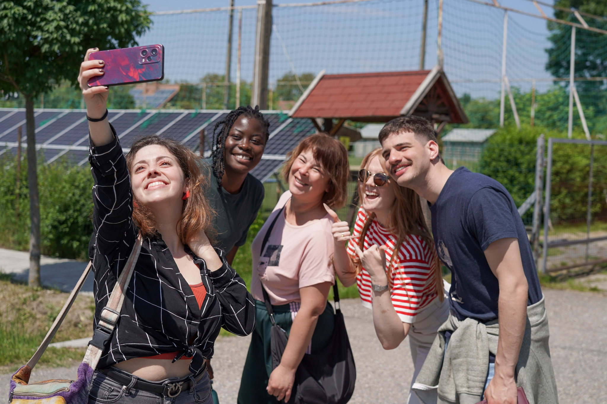
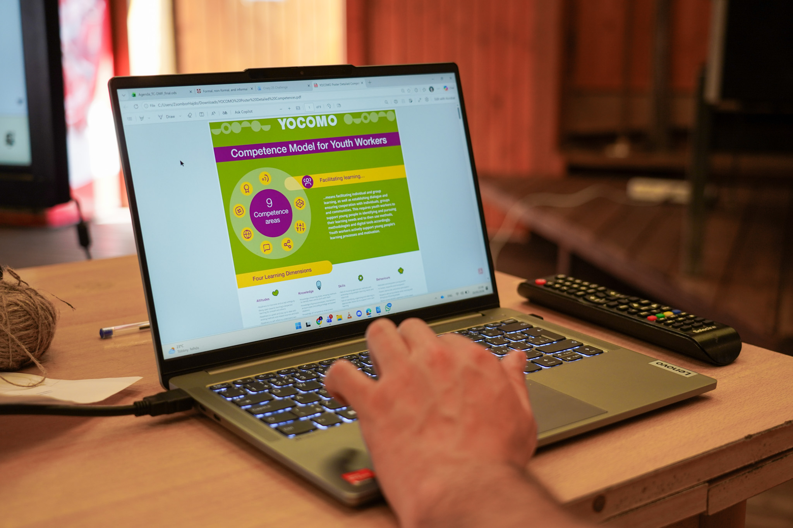
Février 2026 : Erasmus+ en Finlande
Du 23 février au 1 mars 2026, notre groupe de jeunes ukrainiens de Lingua Fortuna a participé à un échange Erasmus+ au Piispala Youth Centre, à Kannonkoski, en Finlande. Sur place, nous avons rejoint des participants finlandais et italiens pour une semaine placée sous le thème Winterland Wellbeing, consacré au bien-être sous toutes ses formes.
- Tout au long du séjour, nous avons pris part à des ateliers et activités centrés sur le bien-être mental, physique et émotionnel : séances de yoga, exercices de développement personnel, et autres pratiques visant à mieux se connaître et à prendre soin de soi.
- L’échange a également été marqué par de riches moments interculturels. Nous avons organisé des soirées thématiques dédiées aux cultures ukrainienne, italienne et finlandaise, favorisant les rencontres, le partage et la découverte.
- Entre activités hivernales, nouvelles amitiés et paysages enneigés, l’expérience a été inoubliable grâce à l’observation des aurores boréales qui a marqué les esprits.
- Ce voyage a été une opportunité unique d’apprentissage, de connexion humaine et de découverte, dans un cadre naturel exceptionnel.
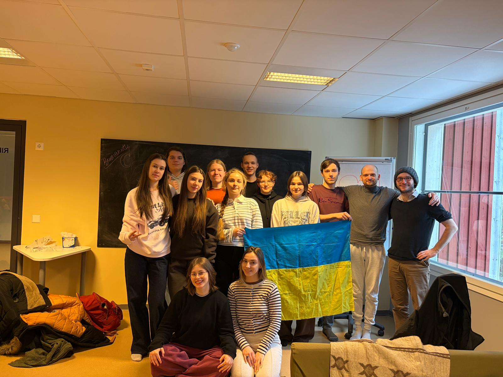
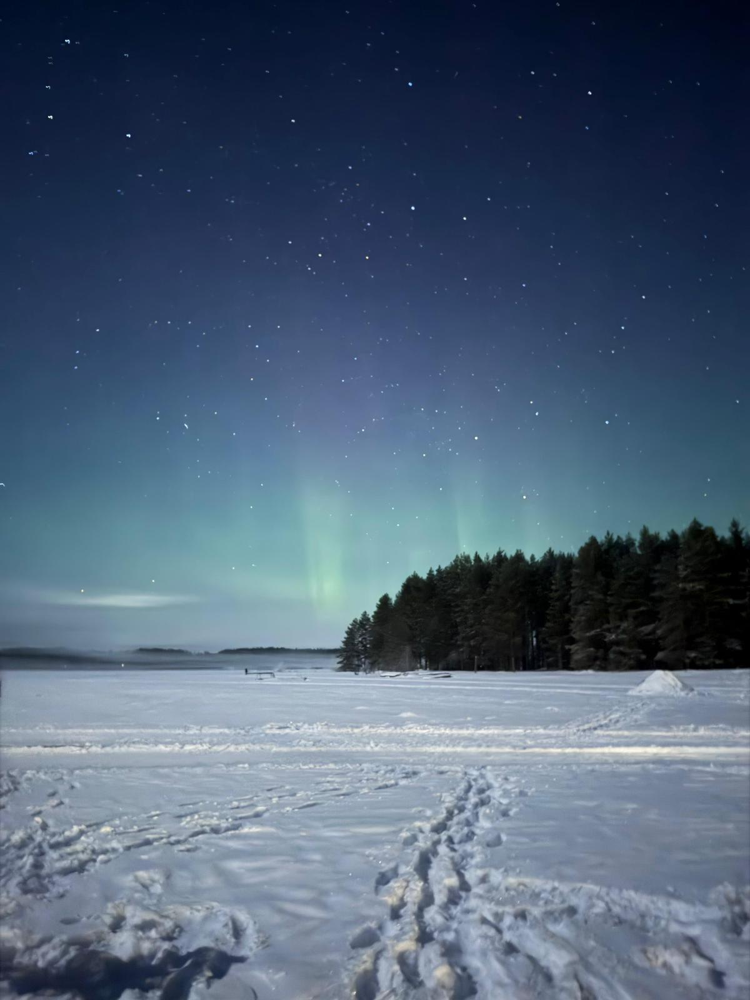
Août 2025 : Ciné Club et stage cinéma
Lingua Fortuna, avec l’aide de la Médiathèque Nouvelle, organise tout au long de l’année des séances de cinéma suivies de débats et de tables de conversation. Du 18 au 22 août 2025, le stage « Ciné Club » a fait sa première apparition. Au programme :
- Histoire du cinéma belge.
- Grandes étapes de la création d’un film.
- Manipulation des outils techniques (caméra, son…).
- Écriture d’un scénario.
- Tournage d’un court-métrage.
Ce court-métrage a été présenté en octobre 2025 dans les locaux d’Ukrainian Voices. Le projet se poursuit pendant l’année 2025/2026 !
Août 2025 : Camp d’été aux Lacs de l’Eau d’Heure
Du 1er au 6 août 2025, plusieurs enfants de 8 à 12 ans ont profité du cadre verdoyant de la ferme de Manensart pour créer, explorer et se reconnecter à la nature.
Au programme :
- Activités sportives, créatives & ludiques.
- Moments de partage et de jeux.
- Nourriture saine.
- Baignades dans les lacs & accrobranche.
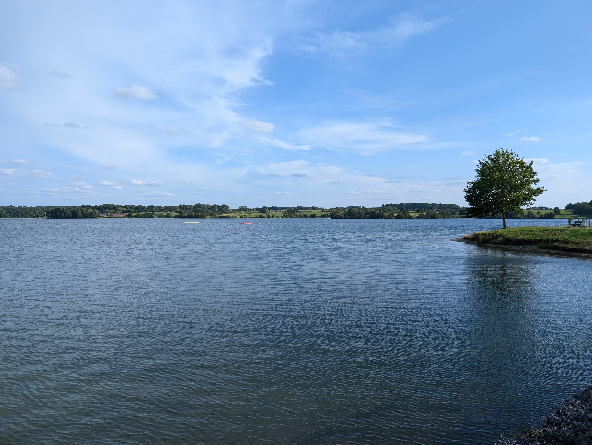
Merci à la fondation Heroes for Good pour leur soutien dans la réalisation de ce projet !
Juillet 2025 : Projet Erasmus+ à Bruxelles - Getting Out of the Digital Box
Du 7 au 13 juillet 2025, Lingua Fortuna a accueilli à Bruxelles une trentaine de jeunes venus de Finlande, d’Ukraine et d’Italie. Grâce au programme Erasmus+, ce échange de jeunes, organisé en collaboration avec l’association jeunesse finlandaise Piispala et l’association italienne Polisportiva, a permis aux jeunes de se rencontrer autour du thème de la digitalisation et de son impact sur la vie quotidienne.
Au programme :
- Échanges de bonnes pratiques pour se détacher des écrans.
- Visite des bureaux de Microsoft.
- Jeux d’exploration dans Bruxelles.
- Découverte de la culture belge.
- Art-thérapie et activités artistiques (sculpture).
- Discussions enrichissantes autour d’une thématique commune.
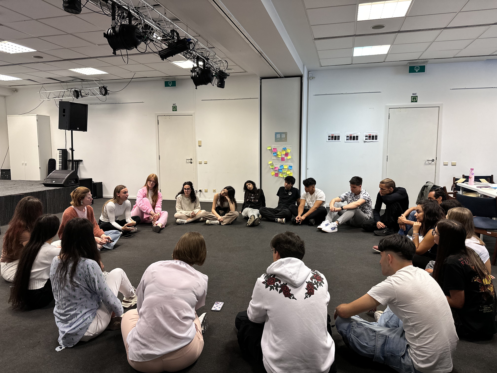
Une semaine riche en émotions ! Merci à Ukrainian Voices pour le soutien lors de cet échange.
Juin 2025 : Week-end à la mer
Du 7 au 9 juin 2025, à De Haan, un magnifique lieu ressourçant, un week-end sur le thème de l’anxiété a permis à des étudiants de souffler avant les examens.
Au programme :
- Techniques de respiration.
- Atelier culinaire.
- Atelier glaçage.
- Balade sur la plage.
- Art-thérapie.
- Discussions de groupe.
- Jeux de société.
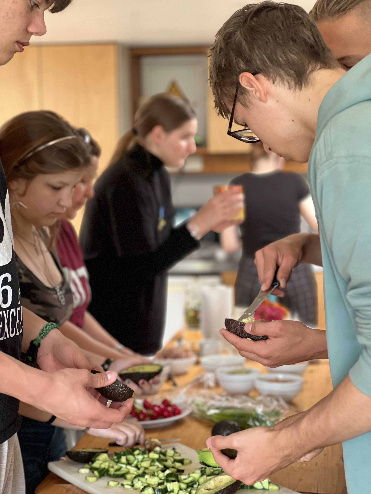
Ce projet a été soutenu par la fondation Heroes for Good.
Février-mars 2024 : Projet Erasmus+ en Finlande - Winter Voices For Change
Du 24 février au 2 mars 2024, une dizaine de jeunes de 16 à 18 ans de l’ASBL Lingua Fortuna ont découvert la Finlande autour du thème Winter Voices For Change.
Au programme :
- Discussions inspirantes sur le monde de demain.
- Activités culturelles et sportives.
- Balades dans la neige sous les aurores boréales.
Une semaine inoubliable et le début d’une belle aventure.
Hiver 2023 : Camp d’hiver à Liège
En hiver 2023, notre conseil de jeunes s’est réuni dans l’une des plus grandes villes de Belgique : Liège, une ville dynamique et riche culturellement.
Pendant deux jours, nous avons échangé autour de nos nouveaux projets, réfléchi à leur réalisation concrète et renforcé la cohésion de notre équipe.
Le camp s’est conclu par une visite du musée de Liège, une belle découverte de l’héritage historique et culturel de la ville.
Été 2022 : Camp d’été aux Lacs de l’Eau d’Heure
À l’été 2022, notre ASBL a organisé un camp pour jeunes sur les magnifiques rives des lacs de l’Eau d’Heure.
Au programme :
- Jeux et défis en équipe.
- Ateliers créatifs (modelage, dessin).
- Baignades dans les lacs.
- Balades à vélo.
- Cours et pratique du français avec des locuteurs natifs.
- Activités sportives.
- Méditation.
- Cuisine collective.
- Discussions autour de thèmes d’actualité (écologie, sexisme).
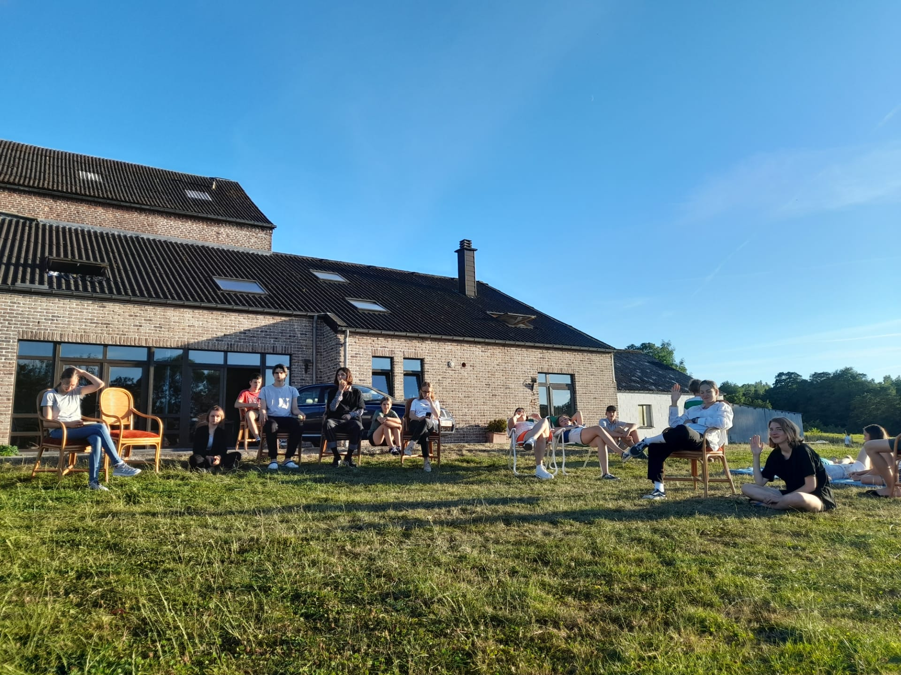
Février 2022 : Student Day
Le 18 février 2022, Lingua Fortuna, avec le soutien de Promote Ukraine, a organisé une journée intitulée Student Day. L’objectif était d’aider les étudiants ukrainiens à mieux comprendre les particularités et les démarches liées aux études supérieures en Belgique.
Au programme :
- Explications sur l’équivalence des diplômes (Fédération Wallonie-Bruxelles).
- Présentation des universités et des hautes écoles en Belgique.
- Témoignages d’étudiants ukrainiens vivant en Belgique.
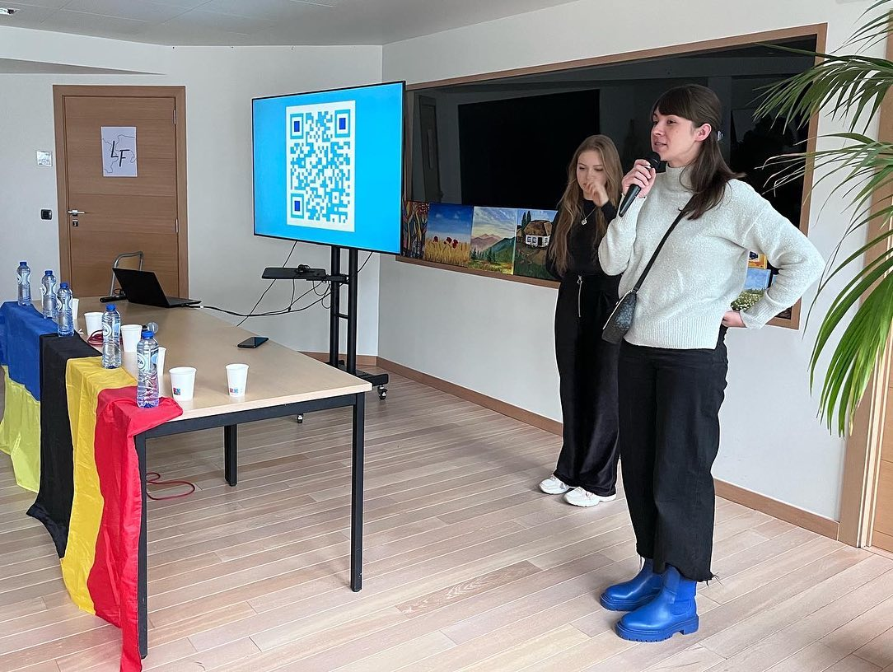
L’événement a duré deux heures, durant lesquelles les membres de notre conseil de jeunes et des intervenants invités ont présenté tous les aspects liés à l’inscription dans un établissement d’enseignement supérieur belge.
Août 2018 : Premier camp d’été à la ferme de Manensart
Le 5 août 2018 a marqué le début du tout premier camp d’été d’une semaine de l’ASBL Lingua Fortuna, organisé à la ferme de Manensart, dans un petit coin paisible et verdoyant de la province de Hainaut.
Ce projet visait à faire découvrir la Belgique à 20 jeunes venus de toute l’Ukraine et à leur offrir une expérience d’échange linguistique et culturel avec des Belges.
Le programme comprenait :
- Cours de français pour les jeunes Ukrainiens (avec un accent sur la culture belge).
- Initiation à la culture slave pour les enfants belges (le matin).
- Découverte de la région à travers des jeux (Chimay, grottes de Neptune, Fondry des Chiens…).
- Ateliers de théâtre et spectacle final lors d’un barbecue.
- Atelier de zoothérapie avec l’ASBL Bella et Compagnie.
- Balades sportives et randonnées.
- Atelier musical.
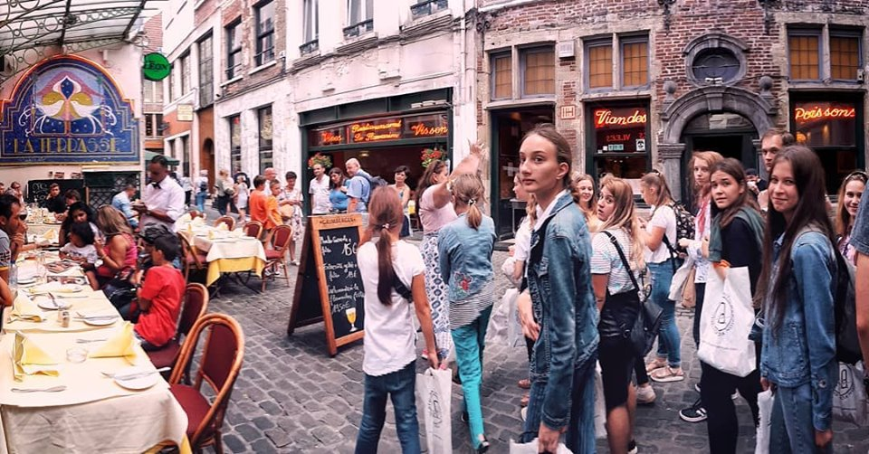
Ce fut une semaine très riche ! L’équipe était composée de 7 personnes travaillant à temps plein, responsables des cours, de l’animation et de la cuisine.
À l’époque, nos objectifs étaient centrés sur l’échange culturel et linguistique entre l’Ukraine et la Belgique, ce qui reste encore d’actualité, mais dans un contexte désormais bien différent.